Videoüberwachung und KI von Stefan Leibfarth in der
How it all started
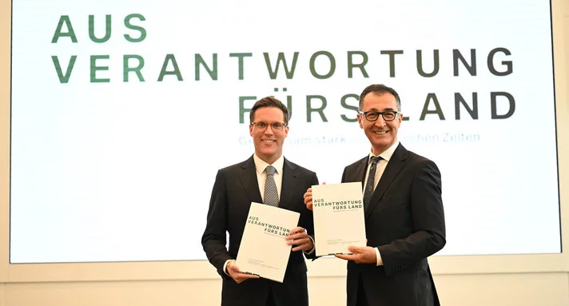
Begründung
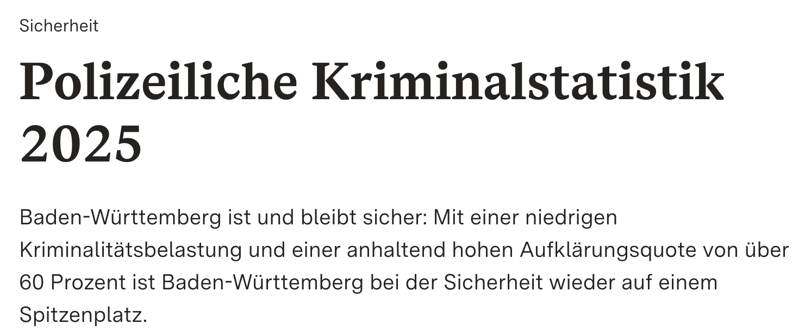
PM des IM BW
"LfV technisch auf der Höhe der Zeit ausstatten"
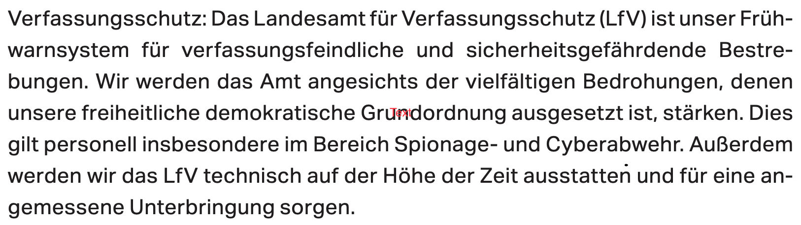
"Einsatz Künstlicher Intelligenz zur Auswertung digitaler Beweismittel intensivieren"
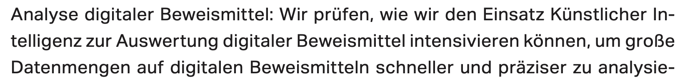
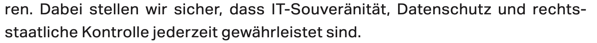
Mehr beim RAV.
Bias Black-Box Wie Entlastendes Finden? Waffengleichheit wie?
Polizeidrohnen Made in BW
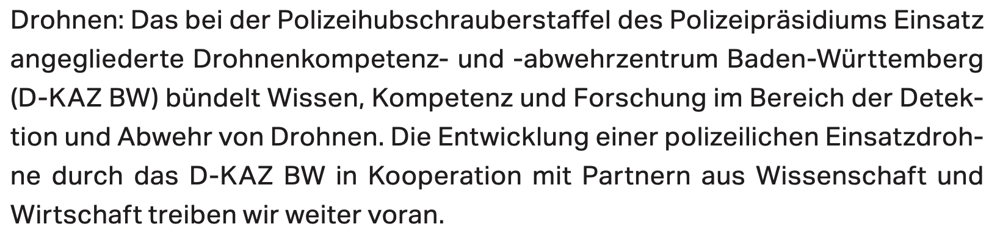
Aktuell oft DJI aus China
Taser in der Fläche?
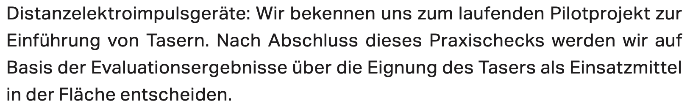
Schwelle gesenkt, regelmäßig Tote
"Intelligente Videoüberwachung: KI-Videoschutz"
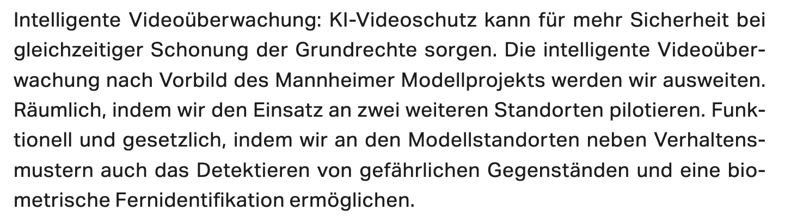
EU-Verordnung über Künstliche Intelligenz öffentlichen Betreibern von Hochrisiko-KI-Systemen
Vorbild Mannheim
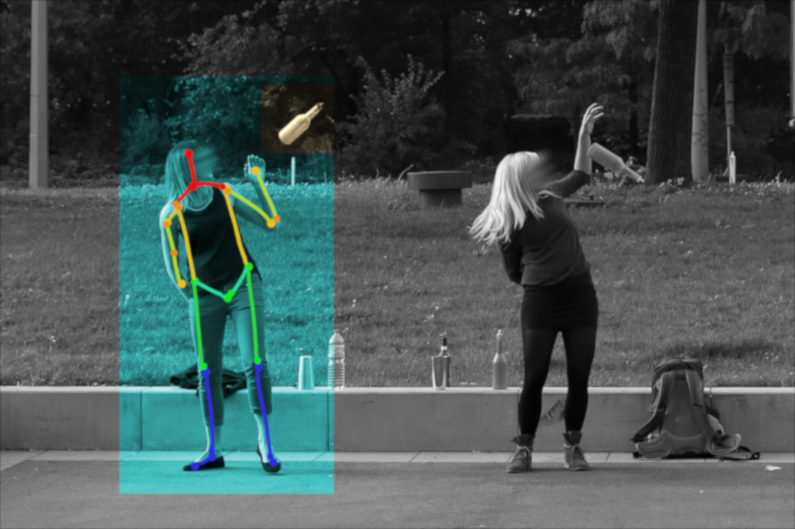
netzpolitik.org
* Jahre erfolglos * Nun mit Schauspielern
Mehr Bodycam
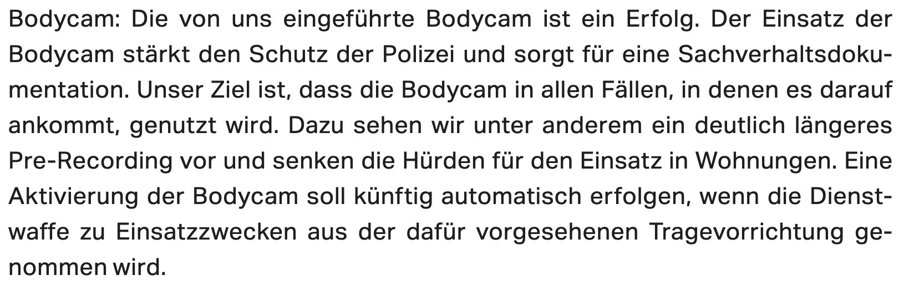
"Automatisierter Bildabgleich im Internet"
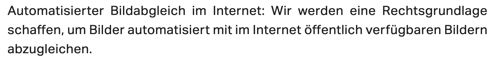
Ad-hoc-Abgleich - Massiver Eingriff - Biometrie kann man nicht ablegen
Mehr Präventivgewahrsam
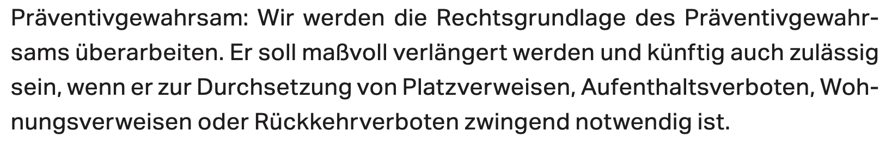
Ist das alles?
Mindestforderungen
Zunächst zeitliche Befristung und unabhängige wissenschaftliche Evaluation.
Und die Alternativen?
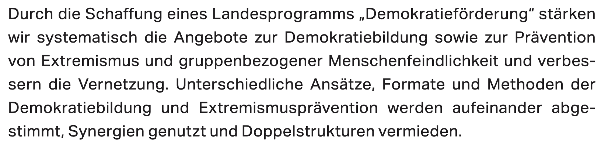
Fragen?
Diese Präsentation: t1p.de/mmaj4